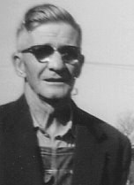
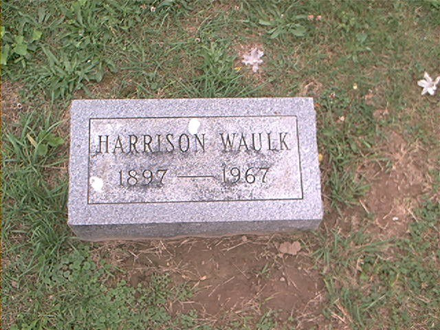
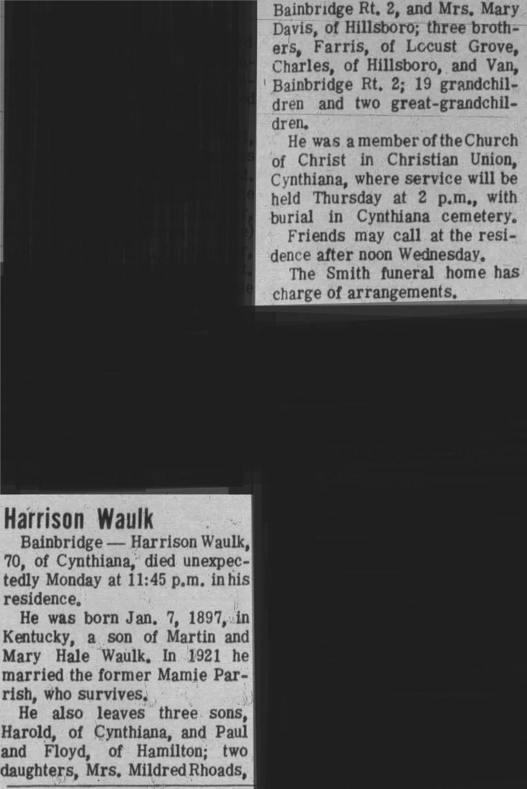

Benjamin Harrison Waulk
7 January 1897 – 23 October 1967
Quick Facts
Immediate Family
Parents
- Martin Waulk
- Mary Hale Waulk
Children
- Mildred Louise Waulk Rhodes (1922–2002)
- Mary Francis Waulk Davis (1923–1994)
- Gabriel Harold “Harold” Waulk (1925–2002)
- David Paul “Paul” Waulk (1927–2009)
- Floyd Russell Waulk (1928–2010)
- Michael E. Waulk (1945–1945)
Siblings
- No verified sibling list located in the sources reviewed.
On Family Tree Sites
Couple Folder
Life Timeline
1897 · Born in Kentucky on 7 January, per obituary clipping and memorial.
1921 · Married Mamie Parrish, according to the obituary clipping and Find a Grave family panel.
1922–1945 · Six named children in family memorials; Mamie’s obituary additionally states that four children predeceased her, with all identities not recovered.
23 Oct 1967 · Death date reported by Find a Grave; burial at Cynthiana Cemetery.
Life Story
Benjamin Harrison Waulk was born in Kentucky on 7 January 1897. A newspaper obituary clipping names Martin and Mary Hale Waulk as his parents and says he married Mamie Parrish in 1921. The obituary also identifies him as a member of the Church of Christ in Christian Union in Cynthiana.
Find a Grave reports his death on 23 October 1967, age 70, in Cynthiana, Pike County, Ohio, and burial at Cynthiana Cemetery. The obituary clipping’s visible crop does not show its full publication date or issue heading, so the exact death date is attributed to the memorial/marker record rather than the clipped text.
Find a Grave and family obituaries identify six named children, including David Paul “Paul” Waulk. Mamie’s obituary says four children predeceased her; only one of those may be identifiable from the sources currently reviewed, so no names are inferred for the other three.
Photographs & Family Gallery



Sources & Records
- Benjamin Harrison Waulk, Find a Grave memorial 14627457 — Reports dates, Cynthiana Cemetery, family group; maintained by grandson Roger Waulk.
- Benjamin Waulk, obituary clipping in Greenfield Daily Times (image posted to Find a Grave) — Visible clipping names parents Martin and Mary Hale Waulk, birth date 7 Jan 1897, marriage to Mamie Parrish in 1921, some surviving children and church. Full date/header not visible in scan.
- Mamie Sedalia Parrish Waulk, Find a Grave memorial 14629127 — Widow of Harrison Waulk; names David Paul (“Paul”), Floyd and other children; obituary text gives her parents.
- David Paul “Paul” Waulk, Find a Grave memorial 35374642 — Paul’s obituary explicitly names Benjamin Harrison and Mamie (Parrish) Waulk as his parents and names wife/children.
- Floyd Russell Waulk, Find a Grave memorial 61592320 — Floyd’s obituary names parents Harrison and Mamie Waulk and Paul as a brother; memorial family panel also identifies Benjamin and Mamie.
Person Archive
Browse the profile’s preserved material in the An American Bloodline Generation VII archive.
- Photographs and images
- Family photographs
- Headstone photographs
- Documents and records
- Research notes
- Sources and source copies
- Family books
Research Notes and Open Questions
- The obituary image added by Linda Gipson on 5 March 2025 is attributed by Find a Grave as a Greenfield Daily Times obituary clipping, but its full issue date/title/header is cropped; do not invent a publication date.
- The clipped obituary names Martin and Mary Hale Waulk as Benjamin’s parents. These names are retained as memorial/obituary-reported parent identities; no original birth record or household schedule has been reviewed.
- The obituary text identifies surviving children but its crop is partial. The six named child links come from Find a Grave memorial family panels plus separate family obituaries; four children predeceased Mamie according to her obituary, and three of those remain unidentified.
- The burial place label “Cynthiana Cemetery, Cynthiana, Pike County, Ohio” is preserved as Find a Grave reports it; do not normalize the county or cemetery name without a cemetery record.
- Portrait image is a small, black-and-white photograph; caption it as a portrait and credit Roger Waulk. Do not confuse it with the headstone photo.
DNA
No DNA results or tests were located in the sources reviewed for this profile.